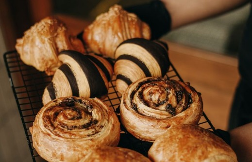

Menú
Nuestro café
Cada café que servimos tiene un origen propio. Elegí un origen para conocer al productor y la finca.


Para comer
Pastelería de elaboración propia, todos los días.
Rollo de canela y nuez pecan
Horneado en el local todas las mañanas, con glaseado suave.

Selección de pastelería del día
Medialunas, scones y facturas de manteca, variables según el día.